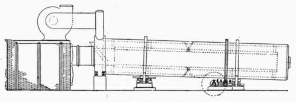

22. Details Of The Manufacture. Preparation And Mixing Of The Raw Materials
Description
This section is from the book "Cement And Concrete", by Louis Carlton Sabin. Also available from Amazon: Cement and Concrete.
22. Details Of The Manufacture. Preparation And Mixing Of The Raw Materials
The main points in the preparation of the raw material for burning are: First, the proper amount of each ingredient must enter the mixture; second, the materials must be reduced to an extremely fine state of division; and third, the mechanical mixing must be as perfect as possible. Unless the ingredients are dried, the first requirement is not easy to fulfill, especially with marl and clay, as the absorptive power of the materials renders it difficult to properly apportion them. The wet process, which thus offers the greatest difficulty in the first proportioning, furnishes a ready opportunity for correction of the mix before burning. With the dry process the variation in the analysis of the materials is the most frequent cause of variations in the mix, and should be carefully watched. A slight error in proportions is apparently less dangerous with argillaceous limestone, such as cement rock, than with pure limestone and clay, and for this reason some of the works producing cement from this material are prone to become careless in proportioning and correcting the mix.
Referring to §9 we have seen that the per cent of lime must not exceed 2.78% silica +1.1% alumina. In practice, however, the percentage of lime in the mix seldom exceeds 2.7 X percent, silica + per cent, alumina; and the percentage of lime in the finished cement is still less, because of the loss of some volatile products and the addition of a small amount of ash and kiln lining in the process of burning.
To illustrate the method of calculating a cement mixture let us consider that we have a Lehigh cement-rock of composition lime 37.5; silica 17.0; alumina 7.0, and purer limestone of composition lime 51.5; silica 4.5; alumina 0.5, and desire to determine the proper proportions in which to mix them.
Using the above formula as fixing the proper proportion of lime we have, For 100 parts Cement Rock:
Lime required by Silica 17.0 x 2.7 = | parts 45.9 |
Lime required by Alumina = | 7.0 |
Total Lime required for 100 parts rock = | 52.9 |
Lime in rock | 37.5 |
Lime to be added | 15.4 |
In one part of Limestone:
parts Lime required by Silica . 045 X 1.7 = . 0765 Lime required by Alumina = . 0050 Total Lime required for 1 part limestone . 0815 Lime contained in 1 part limestone . 515 Excess of Lime in 1 part limestone . 4335 |
Then to 100 parts cement rock we must add 15.4/4335 = 35.5 parts limestone.
More than three-fourths of the Portland cement manufactured in the United States is made from limestones, either pure or argillaceous. These must be ground before they can receive the required addition of clay, or of purer limestone, as the case may be, and they are usually dried to facilitate the grinding as well as to permit of determining the correct proportions of the ingredients for the mix. The first step in the process with hard materials is to pass them through ordinary rock crushers. These are commonly of the gyratory type and of large size. Rolls and "dry pans" are also sometimes employed for the softer limestones and shales. Rolls and ordinary rock crushers are too familiar to need description here. A "dry pan" consists of a cylinder 6 to 12 feet in diameter in which revolve two heavy rollers. The rollers, being on opposite ends of a horizontal shaft attached to a vertical axis, turn about the shaft as well as revolve about the axis, the crushing being done between the edges of the rollers and the floor of the pan. This style of mill is also called an edge runner. The rock works to the outside and is discharged through perforated plates. Edge runners are not suited to reducing coarse lumps of very hard material, but work well on clay and soft rock. A similar grinder used on wet materials is called a "wet pan".
In the dry process the material passes from the rock crushers to the driers. The rotary drier, the style in most common use, resembles the rotary kiln; it is a cylinder about four or five feet in diameter and about forty feet long, lined with brick, and is set slightly inclined to the horizontal and revolves slowly on rollers. The drier may be heated by the gases from the burning kilns or by a separate furnace, the hot gases entering at one end and escaping into the stack. The material is introduced at the higher or stack end and works slowly to the lower or furnace end. One style of drier, the Ruggles-Coles, has an inner cylinder, and the materials pass through the annular space between the two, the products of combustion being forced first through the inner cylinder and then back through the raw material. The stack drier has also been used, in which the material is fed at the top and is deflected by baffle plates as it falls through the hot gases.
RUGGLES-COLES DRIER.
The logical time for mixing the ingredients would seem to be immediately after they pass the driers, and this is usually done, though in some cases the materials are not mixed until after further reduction, while in a few mills the mixing precedes the drying. The further grinding of the raw materials is usually accomplished in two stages, a typical combination being ball mills and tube mills, though Kominuters, Griffin, Kent, Williams, and Huntington mills are also employed. The thorough grinding of the raw materials is of the greatest importance, not only because of its effect on the quality of the product, but because an extremely fine mix may be burned at a smaller expense for coal. As the same styles of grinding machinery are used in pulverizing the clinker they will be briefly described under that head.
In the wet process, which is seldom used for materials other than marl and clay, only the clay is dried. The grinding of the clay may be accomplished in one of the forms of disintegrators, such as the Williams or Stedman mill, or in a dry pan or edge runner, described elsewhere. After the addition of the clay to the marl the further grinding or mixing is done in ordinary pug mills, in wet pans, or in wet Griffin, ball and tube mills. These mills are described under the head of grinding (§§ 28 and 29). After thorough grinding the material is run into tanks for correcting the proportions and here the thorough mixing is completed by revolving paddles working in the tanks, or by agitation caused by jets of compressed air allowed to escape into the slurry.
Continue to:
- prev: Manufacture. Art. 6. The Manufacture Of Portland Cement. Part 3
- Table of Contents
- next: Preparation And Mixing Of The Raw Materials. Part 2